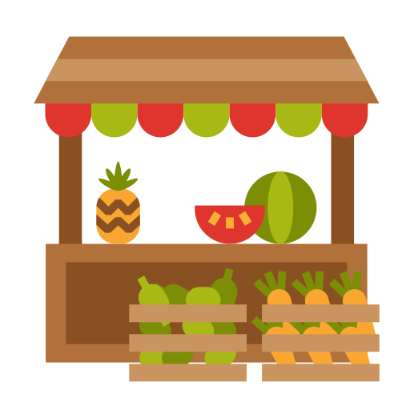

Welcome to Fresh Fruits Store 🍎🍌🥭 We provide a wide variety of fresh, healthy, and organic fruits to our customers. Our mission is to encourage people to live a healthy lifestyle by consuming natural and nutritious food. We carefully select fruits from trusted farms to ensure the best quality, freshness, and taste. Our fruits are rich in essential vitamins, minerals, and antioxidants that help improve overall health and immunity. We believe that “Health is Wealth”, and fruits play an important role in maintaining a balanced diet. Whether you are looking for daily nutrition or tasty seasonal fruits, we are here to serve you with the best quality products at affordable prices. Customer satisfaction is our top priority, and we always strive to deliver fresh fruits with great service.
Apple is rich in fiber and vitamins. It helps improve digestion and keeps your heart healthy. Eating an apple daily can boost your immunity.
Grapes is a great source of energy. It is rich in potassium and helps in muscle strength. It is very good for digestion and overall health.
Mango is known as the king of fruits. It is rich in vitamins A and C. It improves immunity and gives a refreshing taste.